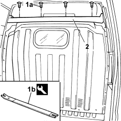

7040B60 ADDITIONAL INTERIOR LUGGAGE COMPARTMENT ON CABIN ROOF ON HIGH-ROOF VERSIONS - R.R.
- Path
- Procedures > 70 FITTINGS > 7040 BODY INTERIOR FITTINGS AND TRIM > 7040B LUGGAGE COMPARTMENT AND LOAD PLATFORM TRIMS > 7040B60 ADDITIONAL INTERIOR LUGGAGE COMPARTMENT ON CABIN ROOF ON HIGH-ROOF VERSIONS - R.R.
- Kind
- repair procedure (removal / refitting; the operation number is the code)
- Applies to
- all engines; all production periods
- Interactive page
- https://sloeber94.github.io/elrnDB-fDct/en/#/244001515
Applies to: all engines; all production periods
 Removing
Removing
 Refitting
Refitting1. Remove the press-fit buttons (1a) fixing the luggage compartment using the tool (1b) indicated.
Description | Code | Function | Validity |
|---|---|---|---|
Knife | 1.878.077.000 | Removing press-fittings | T.T |
2. Remove the luggage compartment in the cabin.

Applies to: all engines; all production periods
Refitting
Removing- Fasten the luggage compartment using the press-fit buttons.